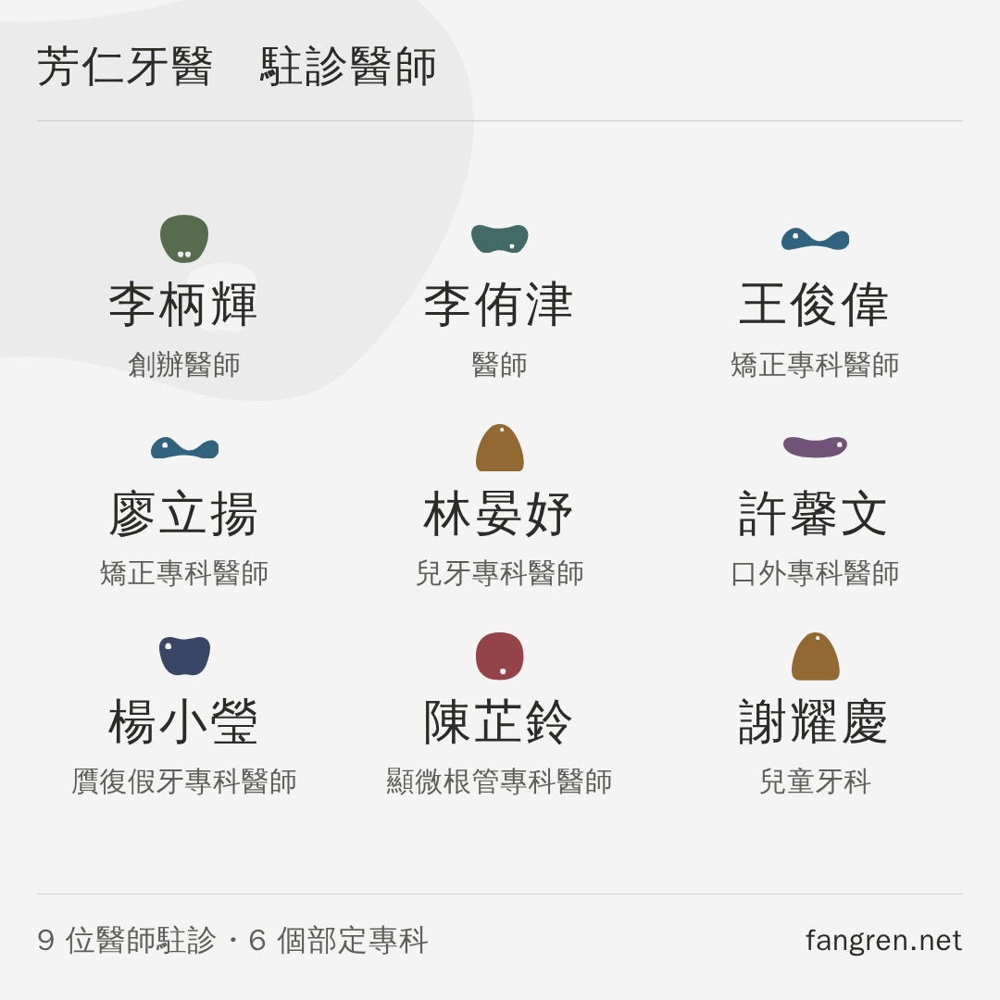
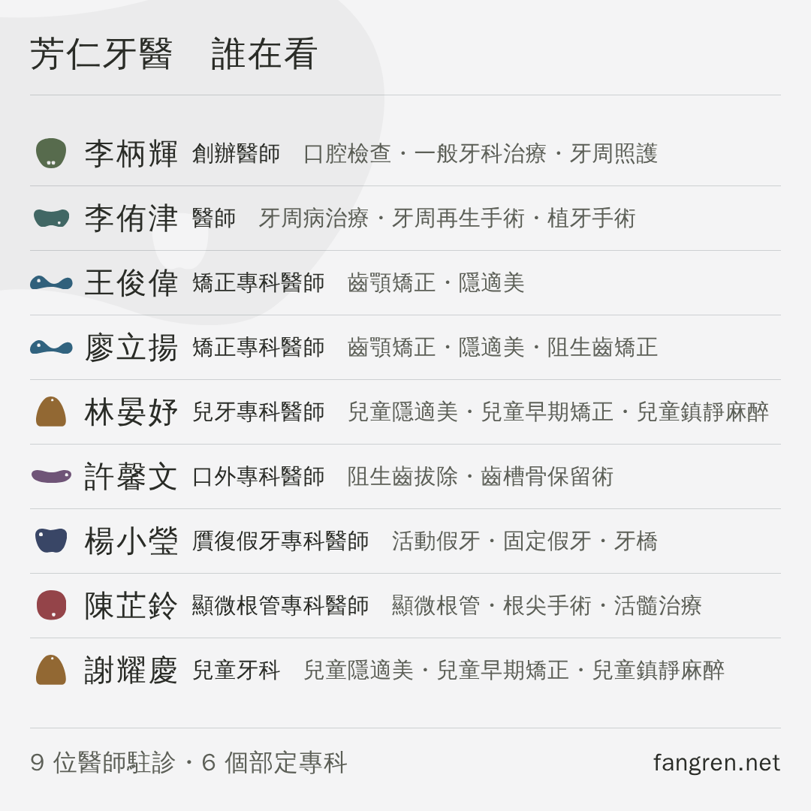
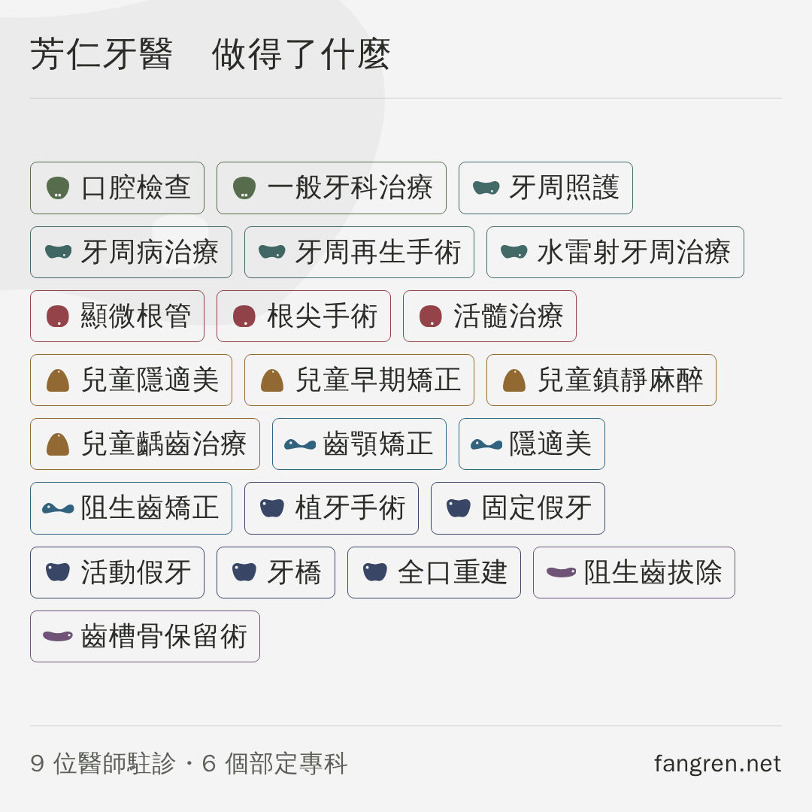
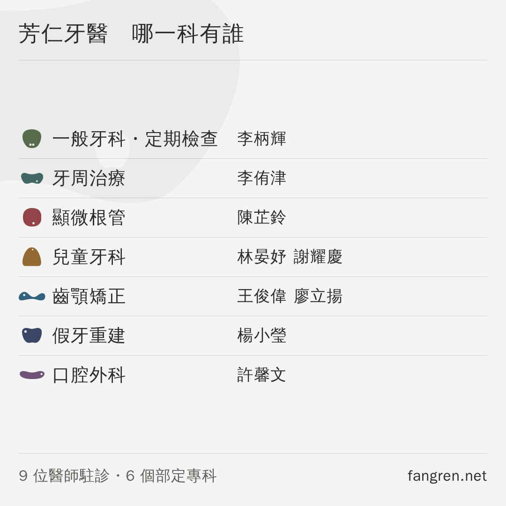
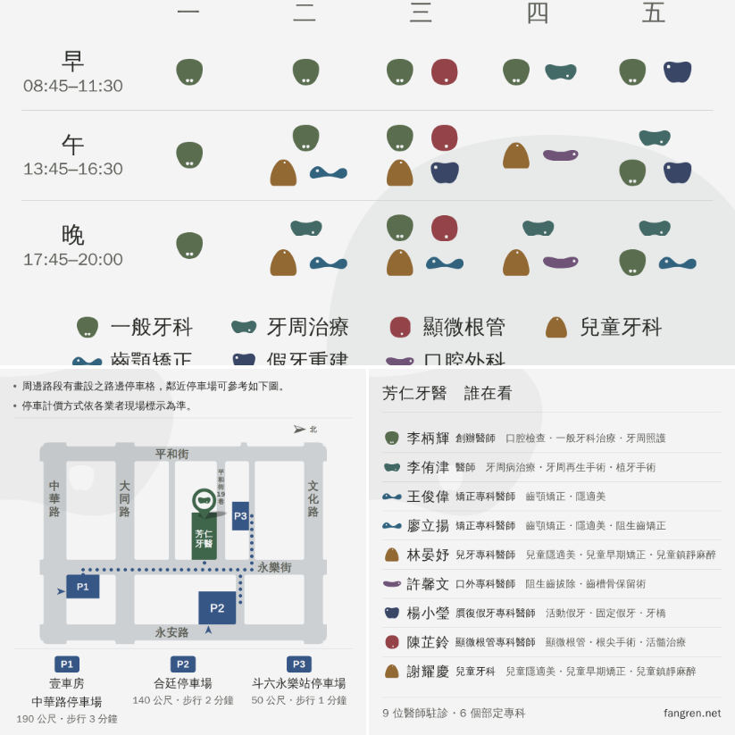

LINE 商家貼文的第三格主題與科別・醫師 四案，挑一個
主頁「最新貼文」那三格的小格右。
大格是看診時間（已定稿）、小格左是位置與周邊停車（已定稿），
這是最後一格。
⚠ 你說「門診表已經有七個科別，不要只是又重複只列七個科別」——
所以四案裡有三案完全不寫科別名，科別只靠門診表那組圖案與顏色帶過，
省下來的地方全部給人與做得了什麼。
⚠⚠ 判準是這一張四案在小格的實際大小（410px）並排

左上 Ⓐ 九位醫師 右上 Ⓑ 醫師 ＋ 他在做的事
左下 Ⓒ 做得了什麼 右下 Ⓓ 一科一行 ＋ 該科醫師
下面每一個數字都是量這個尺寸得來的。1080 的原圖上看起來明顯的，縮到 410px 常常就沒了。
四案差在哪
| 寫了誰 | 寫了做什麼 | 寫科別名 | 最小的字 | |
|---|---|---|---|---|
| Ⓐ 九位醫師 | 9 位 | 沒有 | 沒有 | 11.4px |
| Ⓑ 醫師 ＋ 專長 | 9 位 | 每位 3 項 | 沒有 | 11.0px |
| Ⓒ 做得了什麼 | 沒有 | 23 項 | 沒有 | 12.1px |
| Ⓓ 一科一行 | 9 位 | 沒有 | 七個都寫了 | 12.1px |
「最小的字」＝ 那一案在小格 410px 上最小的一種字。 10px 是這一線的地板（小於它在那一格等於沒寫），產生器過不了就不出圖。
⚠⚠⚠ 先講一件量出來的事大格會把門診表那排圖例切掉一半
Ⓐ／Ⓑ／Ⓒ 三案不寫科別名，押的是「大格那排圖例已經教過哪一顆是哪一科」。 把門診表那張逐像素掃過之後，那個前提只成立一半—— 主頁大格只看得到那張圖的 y 271~809，而圖例是兩行：
| 圖例 | 墨落在 | 大格看得到嗎 |
|---|---|---|
| 一般牙科・牙周・顯微根管・兒童牙科 | ≤ 767 | 看得到 |
| 齒顎矯正・假牙重建・口腔外科 | 809~814 | 被切掉 |
⚠ 這件事對門診表那張自己也成立——圖例不是裝飾，是那張表讀不讀得懂的前提。
⚠⚠ 但它還有一個沒收掉的前提：主頁那一格到底是裁切還是留白，我們還沒驗過
（在後台按一次「預覽」就知道）。留白的話這一整段不成立，三案都沒有問題。
Ⓓ 存在的理由就是這個：它自己把七個科別名寫回去，不靠門診表。
Ⓐ 九位醫師姓名最大，科別只有圖案

姓名 19.7px（四案裡最大）。缺點：看不出這間做得了什麼—— 而看貼文的人多半不認識任何一位醫師的名字。
Ⓑ 醫師 ＋ 他在做的事建議這一格

同時回答「誰」與「做得了什麼」，而且一個科別名都沒寫。
專長取站上那位醫師專長欄的前三項，順序照站上、沒有重新挑。
代價：專長那一行 11.0px，是四案裡最小的，貼著 10px 的地板。
Ⓒ 做得了什麼二十三項專長，沒有人名

二十三項全部是站上醫師卡的專長，一個字都沒有另外寫，同一個詞只留一次。 對「我這個問題你們處理得了嗎」回答得最直接，但沒有醫師—— 而你原本要的就是醫師的資訊，所以它列在這裡是給你比。
Ⓓ 一科一行 ＋ 該科醫師重複了七個科別名的那一案

最好懂的一案：哪一科有誰，一眼對得起來。 但它就是你說不要的那一種——七個科別名又寫了一次。 留著是因為上面那件事：圖例在大格會被切掉三科，只有這一案不受影響。
在主頁上長怎樣大格＝看診時間 小格左＝停車 小格右＝Ⓑ

另外三案的三格模擬在
profile-3up-roster.png、profile-3up-skills.png、
profile-3up-byspec.png。
「詳情」那一欄要貼的字圖上的網址點不下去，這裡的可以
⚠⚠ 七條科別網址由這一欄接——圖上放不下七個入口， 但「詳情」放得下，而且點得下去（同小格左那張地圖的三條停車場網址）。 照這一份貼，不要重打。
還沒問到、也還沒決定的
・「假牙重建」這個縮寫沿用門診表那張（站上仍然是「植牙・假牙重建」）。
・Ⓑ 的專長取前三項是版面決定的，不是挑的——要換哪三項是你的決定。
・主頁那一格是裁切還是留白，後台按一次「預覽」就知道（見上面那一段）。
・浮水印照小格左那一張（同一顆、4%、壓左上），沒有另外問過。
產生器 node drafts/channels/post-docs.mjs
守門 node drafts/channels/check-post-docs.mjs
推導在 drafts/channels/README.md 第三十六節。